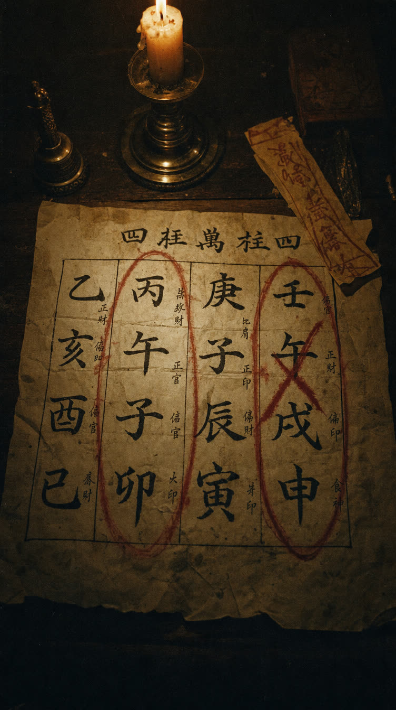

새벽 별당 창에 불이 켜져 있고—
「거기, 지나가는 그대. 잠깐만요.」
· 소리와 함께 입장하시길 바랍니다 ·
— 심곡사 뒤뜰, 별당 앞 —
반쯤 열린 문 안—
붉은 실을 감던 여인이, 이쪽을 보고 있다.
"이 새벽에 여길 지나는 사람은
둘 중 하나예요.
못 잊었거나, 못 만났거나."
"불렀죠. 그대 실이
하도 시끄러워서."
여인이 실 끝 하나를 들어 보인다.
— 어둠 속, 그대 쪽으로 길게 늘어진 붉은 실.
"난 홍단.
이 별당에서 인연 실만 사천 번 이었어요."
"그대 얼굴에 다 쓰여 있어요.
…마음에 걸린 사람, 있죠?"
…끄덕이는 그대를 보고,
여인이 피식 웃는다. "다 보여요, 그런 거."
여인이 방석 하나를 밀어 주고—
눈을 똑바로 맞춘다.
"돌려 말 안 할게요.
그대 고민— 어느 쪽이에요?"
"좋아요, 그럼 봐 줄게요.
실은 이름을 따라 찾거든요."
"그대 이름이 뭐예요?"
…이름을 알려줘야 해요.
"태어난 날도요.
해와 달과 날— 하나도 빠짐없이."
…여덟 자리로 적어줘요. (예: 1995.03.14)
"이제 끝 자리예요."
선택 시 적은 이름·생년월일·성별이 풀이 접수 목적으로만 기록되며,
개인정보처리방침에 동의한 것으로 봅니다.
"그 사람이랑— 헤어진 지 얼마나 됐어요?"
"지금, 연락은 해요?"
"마지막으로 설렜던 게— 언제예요?"
"혹시… 눈에 밟히는 사람 있어요?"
대충이면 돼요 — 실 짚는 기준으로만 써요.
여인이 실을 손끝으로— 톡, 튕긴다.
실이 가늘게 떨린다.
"……"
"…아직 매어 있네요, 저쪽 끝이."
여인이 처음으로 웃음기를 거두고
그대를 가만히 본다.
"…나왔어요."
"나 이런 말 함부로 안 하는데—
그 사람, 그대 생각 해요."
여인이 붉은 실 매듭을
그대 앞으로 살며시 밀어 놓는다.
"안 하는 척할 뿐이에요.
실 끝이 아직 그대를 잡고 있거든요."
촛불이 흔들리고,
매듭 위 가락지 두 개가 맞닿는다.
"근데— 연락은 아직 하지 마요.
지금 하면, 끊어져요."
"언제 하면 되는지, 왜 끊어졌는지,
지금 그 사람 속마음까지—
연서(戀書)로 다 적어 줄게요."
— 별당 · 인연 감정 —
"별당 아씨로서 말할게요.
지금부터— 그대의 원국(原局)이에요."
─ 년생, ─월 ─일…
─
이름은— ─.

붉은 표식 — 연(緣)이 얽혀 있는 자리
잠긴 기둥은, 연서(戀書)에서 전부 열어 줄게요
그대 원국에서 나온
* 살이 움직이는 해, 짙기, 다스리는 법—
전부 적어 뒀어요. 연서에서 펼쳐 봐요.
"그 사람도
해요.
실을 보면— 다 보여요.
미련이라고 자책하지 마요.
덜 끝난 인연은— 원래 이래요.
"내 인연은
있어요.
그것도— 생각보다 가까이.
연이 없는 팔자라 여겨 왔죠.
아니에요.
실이 오는 길목을 몰랐을 뿐이에요.
인연이 안 풀린 건—
그대가 부족해서가
아니에요.
때를 몰랐고,
길목을 몰랐을 뿐이에요.
그리고 그건—
알려주면 되는 거예요.
지금부터, 내가요.
심곡사 뒤뜰, 달 밝은 별당
심곡사 뒤뜰 별당에서
인연 실만 사천(四千) 번—
맺고, 잇고, 걸러 왔어요.
누가 언제 누구를 만나는지,
왜 헤어졌는지— 실만 보면 보여요.
신점(神占)이 아니에요.
정통 명리학 · 궁합과 신살(神殺) 기반의 인연 풀이예요.
풀이 미리보기 · 壹
연락이 닿는 달과, 닿아도 안 되는 달.
정확한 때는— 연서에서 보여 줄게요.
그 사람이 오는 해와 방향,
얼굴의 생김까지— 연서에 적어 뒀어요.
풀이 미리보기 · 貳
그대 원국을 보고 전부 적어 뒀어요.
열람만 잠겨 있을 뿐.
겉으론 아무렇지 않은 척해도 두 원국을 포개면 속이 보이는데, 그 사람 요즘 밤마다…
그 사람이 입에 올린 이유와 원국이 가리키는 이유는 서로 다른데, 어긋남이 시작된 뿌리는 사실…
실을 당겨도 버티는 달과 스르르 풀리는 달이 따로 있는데 그대의 물때로 셈하면 올해는…
같은 원진 자리가 다시 눌리면 실은 두 번째로 끊어지는데, 그 자리를 비켜 가는 법은…
사천 번 이어 본 눈으로 보면 이 실이 인연인지 미련인지 답이 나오는데, 마지막 장에 적은 결론은…
그대 배우자 자리를 채울 사람의 윤곽은 이미 원국 안에 있는데, 첫인상부터 말하자면…
실이 팽팽해지는 해가 정해져 있고, 그 해의 어느 철— 어느 방위에서 걸어오는지까지…
연이 닿는 길목의 생김새가 원국마다 다른데, 그대의 실이 걸리는 자리는…
지나간 얼굴 중에 실이 스친 이가 있는지, 있었다면 언제 어디서였는지— 되짚어 보면…
그대 살(殺)을 이용해 다가붙는 이의 낌새는 정해져 있는데, 그 사람은 처음에 꼭…
홍단의
* 가려진 자리는 연서에서 열려요.
새벽마다 지난 대화를 다시 읽고, 보낼까 말까— 혼자 백 번을 망설이는 밤. 겨우 보낸 연락이, 하필 안 되는 달.
당겨도 되는 때와 놓아 둘 자리를 아는 사람은 망설이지 않아요. 연락 한 번에도— 물때가 실려요.
오는 인연을 다 스쳐 보내고, "왜 나만 안 될까"를 되뇌는 밤. 아닌 사람에게만 자꾸 마음을 쓰고.
어느 해, 어느 쪽에서 오는지 아는 사람은 길목에서 놓치지 않아요. 같은 하루가— 다르게 흘러요.
* 심곡사의 인연 풀이는 굿·부적 판매가 아닌,
명리학 궁합·신살론(神殺論)에 근거한 서면 분석입니다.
그대가 받을 것
그대 이름으로 적는, 단 한 통의 연서(戀書).
전부 받아도, 궁금한 매듭만 찢어가도 돼요.
실을 다시 쥔 뒤
진짜 답장이 왔을 때 소름 돋았어요. 지금은… 다시 만나는 중이에요. "매달리지 말라"는 말이 이렇게 다정할 수 있구나 싶었어요.
미련인지 인연인지 그것만 알고 싶었거든요. 반년을 앓던 마음이 일주일 만에 정리됐어요. 읽으면서 우는데— 이상하게 위로받는 기분이었어요.
그 사람 성격까지 어떻게 아는 건지. 물때가 적힌 장은 캡처해서 달력에 옮겨 뒀어요. 40만원짜리 대면 궁합보다 자세해요.
대신 오는 철과 방향이 적혀 있으니까, 이상하게 마음이 놓여요. 소개팅마다 초조했는데 그 조급함이 사라졌어요.
반신반의로 봤는데 길목 장을 읽고 진짜 놀랐어요. 친구들한테 링크 다 돌렸어요. 요즘 저희 단톡 화제가 이거예요.
지난 연애가 왜 그렇게 끝났는지까지 설명이 돼요. 재미로 봤다가 제일 진지하게 읽은 게 이 장이에요.
* 실제 상담 후기를 재구성한 예시입니다.
애가 탈 때마다
궁합 상담 –12만원 · 부적 –55만원 · 재회굿 –180만원
수백만 원, 쓸 필요 없어요.
별당에서 받는 맞춤 인연 풀이
👁 미리 열람하기그대 이름이 적힌 연서의 앞머리 열한 장을 먼저 펼쳐요 — 핵심 문장은 가려 둬요홍단이 일러둬요
일흔일곱 장을 한 번에 다 읽을 여유가 없다면—
제일 애타는 자리 한 매듭만 뜯어가도 돼요.
차례에서 고르면, 그 매듭만 그대 이름으로 적어 줄게요.
한 번 적은 연서는, 평생 그대 것이에요.
결제가 끝나는 그 순간— 그대 서고에 꽂혀요.
혼자 알기엔
그대 곁에도, 실 끝을 못 찾아
애태우는 얼굴이 하나쯤 있죠.
그 사람에게— 이 별당을 알려 줘요.
별당이 전해졌어요.
深谷寺
결제가 끝나는 그 순간,
그대 서고에 「붉은 실의 기록」이 꽂혀요.
회원가입 없이 바로 결제합니다.
결제가 끝나면 결제한 이메일이 곧 열쇠가 되어
내 서고가 자동으로 열립니다.